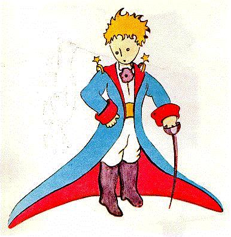
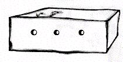

J'ai ainsi vécu seul, sans personne avec qui parler véritablement, jusqu'à une panne dans le désert du Sahara, il y a six ans. Quelque chose s'était cassé dans mon moteur. Et comme je n'avais avec moi ni mécanicien, ni passagers, je me préparai à essayer de réussir, tout seul, une réparation difficile. C'était pour moi une question de vie ou de mort. J'avais à peine de l'eau à boire pour huit jours.
Le premier soir je me suis donc endormi sur le sable à mille milles de toute terre habitée. J'étais bien plus isolé qu'un naufragé sur un radeau au milieu de l'océan. Alors vous imaginez ma surprise, au lever du jour, quand une drôle de petite voix m'a réveillé. Elle disait:
- S'il vous plaît... dessine-moi un mouton !
- Hein! 
- Dessine-moi un mouton...
J'ai sauté sur mes pieds comme si j'avais été frappé par la foudre. J'ai bien frotté mes yeux. J'ai bien regardé. Et j'ai vu un petit bonhomme tout à fait extraordinaire qui me considérait gravement. Voilà le meilleur portrait que, plus tard, j'ai réussi à faire de lui. Mais mon dessin, bien sûr, est beaucoup moins ravissant que le modèle. Ce n'est pas ma faute. J'avais été découragé dans ma carrière de peintre par les grandes personnes, à l'âge de six ans, et je n'avais rien appris à dessiner, sauf les boas fermés et les boas ouverts.
Je regardai donc cette apparition avec des yeux tout ronds d'étonnement. N'oubliez pas que je me trouvais à mille milles de toute région habitée. Or mon petit bonhomme ne me semblait ni égaré, ni mort de fatigue, ni mort de faim, ni mort de soif, ni mort de peur. Il n'avait en rien l'apparence d'un enfant perdu au milieu du désert, à mille milles de toute région habitée. Quand je réussis enfin à parler, je lui dis:
- Mais... qu'est-ce que tu fais là ?
Et il me répéta alors, tout doucement, comme une chose très sérieuse:
- S'il vous plaît... dessine-moi un mouton...
Quand le mystère est trop impressionnant, on n'ose pas désobéir. Aussi absurde que cela me semblât à mille milles de tous les endroits habités et en danger de mort, je sortis de ma poche une feuille de papier et un stylographe. Mais je me rappelai alors que j'avais surtout étudié la géographie, l'histoire, le calcul et la grammaire et je dis au petit bonhomme (avec un peu de mauvaise humeur) que je ne savais pas dessiner. Il me répondit:
- Ça ne fait rien. Dessine-moi un mouton.
Comme je n'avais jamais dessiné un mouton je refis, pour lui, l'un des deux seuls dessins dont j'étais capable. Celui du boa fermé. Et je fus stupéfait d'entendre le petit bonhomme me répondre:
- Non! Non! Je ne veux pas d'un éléphant dans un boa. Un boa c'est très dangereux, et un éléphant c'est très encombrant. Chez moi c'est tout petit. J'ai besoin d'un mouton. Dessine-moi un mouton.
Alors j'ai dessiné.
Il regarda attentivement, puis:
- Non! Celui-là est déjà très malade. Fais-en un autre.
Je dessinai:

Mon ami sourit gentiment, avec indulgence:
- Tu vois bien... ce n'est pas un mouton, c'est un bélier. Il a des cornes...
Je refis donc encore mon dessin:

Mais il fut refusé, comme les précédents:
- Celui-là est trop vieux. Je veux un mouton qui vive longtemps.
Alors, faute de patience, comme j'avais hâte de commencer le démontage de mon moteur, je griffonnai ce dessin-ci. 
Et je lançai:
- Ça c'est la caisse. Le mouton que tu veux est dedans.
Mais je fus bien surpris de voir s'illuminer le visage de mon jeune juge:
- C'est tout à fait comme ça que je le voulais ! Crois-tu qu'il faille beaucoup d'herbe à ce mouton ?
- Pourquoi ?
- Parce que chez moi c'est tout petit...
- Ça suffira sûrement. Je t'ai donné un tout petit mouton.
Il pencha la tête vers le dessin:
- Pas si petit que ça... Tiens ! Il s'est endormi...
Et c'est ainsi que je fis la connaissance du petit prince.
| Commencement | |
Comienzo |
| Index | Capítulo II | |
| Chapitre III | Capítulo III |